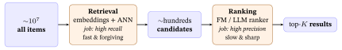

14 Training and Serving a Recommender
Ann’s phone knows her taste as two numbers, and the shop holds ten million films. Most model chapters so far built a scoring rule and an objective: matrix factorization (MF, \(\hat r_{ui}=\mathbf p_u\cdot\mathbf q_i\)) and Bayesian Personalized Ranking (BPR) with an L2 penalty (a penalty on the squared size of the embeddings, which keeps them from growing without bound) in Traditional Recommender Systems and Loss Functions & Regularizers; the propagation step of LightGCN, a graph-based recommender that refines each embedding by averaging its graph neighbors, in From Graphs to LightGCN; the contrastive add-on in Self-Supervised & Contrastive Learning. None of them showed the operational layer that turns a scoring rule into a working recommender. This chapter builds it, by answering three questions that every one of those models leaves open:
- The objective ranks an observed item above an unobserved one, but with only clicks observed, where does the “unobserved one” come from? (negative sampling, §2 and §3.)
- Given the loss, how do the embeddings actually move: what is one training step, by hand? (§4 and §5.)
- Once trained, how do you turn a table of embeddings into a ranked list for a user, over a catalog of millions, fast enough to serve? That is inference, approximate nearest-neighbor (ANN) search and the two-stage funnel, §6–§8.
What this chapter assumes.
- Traditional Recommender Systems: matrix factorization, the dot-product score, implicit feedback.
- Loss Functions & Regularizers §9: the BPR loss \(-\ln\sigma(\hat r_{ui^{+}}-\hat r_{ui^{-}})\), where \(i^{+}\) is an item \(u\) interacted with, \(i^{-}\) one they did not, and \(\sigma\) is the sigmoid (it squashes any number into \((0,1)\)), and its gradient. We use that result here; we do not re-derive it.
- From Graphs to LightGCN §15: the LightGCN objective (BPR + L2) this chapter trains and serves.
- Evaluation Metrics §7 (ranking-quality scores) and §12 (popularity bias), Traditional Recommender Systems §8 (the factorization machine), Neural Networks & Back-propagation (back-propagation) and Linear Algebra for Machine Learning §4 (cosine similarity): each is pointed to by title where it is used.
1. The gap: from a score to a system
Behind Ann’s phone sit two jobs. Someone has to get her two taste numbers right, and someone has to turn them into a short list, out of ten million films, before she loses patience. This section names the two jobs, training and serving, and says where the rest of the chapter takes each one.
Training. The score \(\hat r_{ui}=\mathbf p_u\cdot\mathbf q_i\) is the model’s predicted (hence the hat) preference of user \(u\) for item \(i\). It is the dot product (multiply matching entries, then add) of user \(u\)’s embedding vector \(\mathbf p_u\) and item \(i\)’s embedding vector \(\mathbf q_i\), so it is only as good as those embeddings, and they start as random numbers. Training is the loop that walks them from random to useful by repeatedly showing the model a contrast (“this item beats that one for this user”) and nudging the vectors so the score agrees. The objective is Bayesian Personalized Ranking (BPR), given in Loss Functions & Regularizers §9; the loop around it is §3–§5 here.
Serving. A trained model must, on request, return a short ranked list for a user out of a catalog that may hold tens of millions of items, in a few tens of milliseconds (§8 works through a \(30\) ms budget). Scoring every item and sorting is correct but far too slow at that scale, so real systems use approximate nearest-neighbor (ANN) search and split the work into a retrieval → ranking funnel. That is §6–§8.
These concerns are cross-cutting: the same loop trains MF (matrix factorization), LightGCN (the graph-based recommender of From Graphs to LightGCN), or an SSL (self-supervised learning) model. They differ mainly in how \(\mathbf p_u,\mathbf q_i\) are computed before the dot product, and an SSL model also adds one extra loss term (§5). The same funnel serves all of them. That is why they get one chapter of their own instead of being repeated in each model chapter.
In one line: training walks random numbers to useful ones (the single step of §4 moves Ann’s two numbers by \(0.0182\)), and serving must answer within about \(30\) ms over \(10^{7}\) films (§8).
2. Implicit feedback: where do the negatives come from?
Ann liked only Titanic. Did she dislike the other films, or just never see them? The shop cannot tell, yet the training rule needs a worse film to set beside every better one. This section shows why that is a problem and the one move that solves it.
Recall the central fact of implicit feedback (Traditional Recommender Systems §1; the kind of data Hu, Koren & Volinsky, 2008, describe): the data is positives-only. We see what a user clicked, watched, bought, never an explicit “disliked.” A blank cell of the user–item matrix (rows = users, columns = items, a filled cell = a recorded interaction; Traditional Recommender Systems §1) is unknown, not a confirmed no.
This is a problem the moment you want to rank. A ranking loss like BPR (Bayesian Personalized Ranking; Rendle et al., 2009) is built on triples \((u, i^+, i^-)\), “user \(u\) prefers item \(i^+\) over item \(i^-\)”, and it needs a negative \(i^-\) for every positive \(i^+\). But the data hands us only positives. So we must invent the negatives:
Negative sampling. For each observed positive \((u, i^+)\), draw an item \(i^-\) that \(u\) has not interacted with and treat it as a (provisional) negative. Why the name: we sample a few stand-in negatives rather than using all un-clicked items (there are millions) or pretending we have true labels (we don’t).
Two things make this sound rather than a hack:
- A random un-clicked item is usually genuinely uninteresting to \(u\). Suppose Ann would love \(100\) of the \(10^{7}\) films: a random pick is one of them with chance \(100/10^{7}=10^{-5}\), one in a hundred thousand. So it is a good enough negative on average, even though any single draw might be a false negative (an item \(u\) would have liked but never saw).
- We only need the relative order \(\hat r_{u,i^+}>\hat r_{u,i^-}\) to be right, not absolute labels. Pushing observed items above random un-clicked ones, over millions of triples, is enough to learn a good ranking (a claim from practice, not tested here).
The whole training loop is built on this one move. So before the loop, we must choose how to sample.
In one line: implicit data has positives only, so each positive is paired with one sampled stand-in negative, and a random pick is a film Ann would love with chance only \(10^{-5}\) when she would love \(100\) of \(10^{7}\).
3. How to sample a negative
Ann has liked one film, and the shop has ten million she has not seen. Choosing which unseen film to call the worse one is not innocent: a famous film confuses her more than an obscure one does. This section compares four ways to choose and the trap each one sets.
Uniform (the default). Pick \(i^-\) uniformly at random from the items \(u\) has not touched. Every un-clicked item is equally likely. This is the default BPR negative sampler (Loss Functions & Regularizers §9): cheap, popularity-neutral (no item is drawn more often than another just for being famous), and a strong baseline.
Popularity-weighted. Sample \(i^-\) with probability proportional to its popularity raised to a power: the same \(\text{pop}^{0.75}\) trick that word2vec, a classic method for learning word embeddings, uses when it draws its own negative words (Representation Learning & the Transformer; Mikolov et al., 2013, who report that raising the word frequencies to the power \(3/4\) beat both the raw frequencies and the uniform draw). Popular items are sampled as negatives more often, which (a) makes harder negatives (a popular item is a more confusable distractor than an obscure one) and (b) pushes popular items down, countering their tendency to be over-recommended (the popularity bias of Evaluation Metrics §12; a claim from practice, not tested here). The \(0.75\) power tempers the skew so rare items still appear.
In-batch negatives. Don’t sample fresh items at all: reuse the other positives in the current mini-batch as negatives for each other. (A mini-batch is the small group of training examples the loop handles in one update step; §5.) If the batch holds positives for 1,024 different (user, item) pairs, each user gets \({\sim}1{,}023\) ready-made negatives for free, with no extra lookups, that is, no extra fetching of item vectors from the stored embedding table. This is the standard trick for the contrastive loss in Self-Supervised & Contrastive Learning §3.4, and the cheapest way to get many negatives.
It has two hazards, and they need different fixes.
- False negatives. A genuine positive that happens to share the batch is treated as a negative and pushed apart. This is rare, but likelier for very popular items, which sit in many users’ rows (the toy batch below has one clear case in two). Nothing below repairs it; you live with it, or filter the worst offenders out of the batch.
- Sampling bias. An item enters a batch in proportion to how often it appears as a positive, so a popular item serves as a negative far more often than uniform sampling would ever draw it, and is over-penalized simply for being frequent.
The standard fix for hazard 2 is the log-\(Q\) correction (\(\log\) is the natural logarithm, also written \(\ln\)) (Yi et al., 2019, whose title names the thing exactly: sampling-bias-corrected modeling). In-batch training scores each user against every item in the batch and turns those scores into probabilities with a softmax (divide each \(e^{\text{score}}\) by the sum of all of them, so the numbers are positive and add to \(1\)). Before that step, subtract \(\log Q(i)\) from item \(i\)’s score where \(Q(i)\) is item \(i\)’s share of all logged positives (the shares sum to \(1\)). Hence the name log-\(Q\). An item that turns up twice as often has its score lowered by \(\ln 2=0.693\) relative to the rarer one, which is exactly the handicap needed to cancel being sampled twice as often (the equal-score case in the worked example below shows it).
Two popularity effects: one chosen, one accidental. Popularity-weighted sampling pushes famous films down on purpose, by an amount you choose with the exponent. In-batch sampling pushes them down by accident, by an amount nobody chose, because famous films turn up in more rows. The log-\(Q\) correction cancels the accident (in the toy case of the worked example below) and leaves the chosen push alone; if you want the push, you still have to ask for it with the exponent.
Hard negatives. Deliberately pick high-scoring un-clicked items: the ones the model currently ranks too high, so it gets them wrong. They teach the model the most, because the update of §4 (see its Step 3) is largest for the triples the model gets wrong. Its factor is \(1-\sigma(\Delta)\), where \(\sigma\) is the sigmoid (it turns any number into one between \(0\) and \(1\)) and \(\Delta\) is the score gap of §4, the positive’s score minus the negative’s: at \(\Delta=-1\), a wrongly ordered pair, \(\sigma(-1)=0.2689\) and the factor is \(0.7311\); at \(\Delta=4\), \(\sigma(4)=0.9820\) and the factor is \(0.0180\). So the model learns faster. Pushed too far, though, they overlap true positives and hurt (a claim from practice, not tested here). Used carefully, they sharpen a model that ranks the obvious films well and confuses the close calls.
Dynamic negative sampling keeps them hard as the model improves. Every time you need a negative, draw a few un-clicked candidates at random and keep the one the current model scores highest, so what counts as “hard” is re-decided as the embeddings change. (The name comes from Zhang et al.’s dynamic negative item sampling, 2013.) For Ann, whose vector in §4 is \([2,0.5]\), drawing Rambo \([0,2]\) and Die Hard \([0.5,1.8]\) (a film vector that §6 uses again) keeps Die Hard, which scores \(1.900\) against \(1.000\).
Worked example. Ann’s one liked item is Titanic (book-wide, a like is a rating of \(4\) or \(5\), so Ann’s \(1\) for Matrix is not one). Three of her un-clicked candidates (films outside the three-film matrix) and their play-counts are below. Uniform gives each \(\tfrac13\); popularity-weighted uses \(\text{pop}^{0.75}\), normalized.
| Candidate negative | Plays | Plain share | \(\text{pop}^{0.75}\) | Uniform \(p\) | Weighted \(p\) |
|---|---|---|---|---|---|
| Rambo (blockbuster) | 60 | 0.600 | 21.56 | 0.333 | 0.539 |
| Die Hard | 30 | 0.300 | 12.82 | 0.333 | 0.320 |
| The Notebook (niche) | 10 | 0.100 | 5.62 | 0.333 | 0.141 |
Worked example: in-batch negatives and the log-\(Q\) correction. Take a mini-batch of three (user, positive) pairs straight from the ratings matrix of Traditional Recommender Systems §1, keeping the likes (ratings \(4\) or \(5\)): (Ann, Titanic), (Bob, Vendetta), (Cara, Matrix). Ann’s in-batch negatives are the other two positives, Vendetta and Matrix, at no extra cost. Score them with Ann’s vector \(\mathbf p_{\text{Ann}}=[2,\,0.5]\) (the one §4 starts from) and the film vectors of that chapter’s §5, Vendetta \([1,1]\) and Matrix \([0,2]\):
\[ \text{Vendetta }[1,1]:\ (2)(1)+(0.5)(1)=2.500,\qquad \text{Matrix }[0,2]:\ (2)(0)+(0.5)(2)=1.000 . \]
Both hazards show up in this one batch. In the rating toy, Matrix is a genuine dislike (Ann rated it \(1\)); with implicit data her play would itself be a positive, the same hazard. Vendetta is the clear case: she has not seen it yet, and in §4 she watches it and likes it, so using it as a negative is a false negative (hazard 1). A hard sampler would keep Vendetta, because at \(2.500\) it is the negative the model currently gets most wrong, which here is the false one.
Now the log-\(Q\) correction (hazard 2). Suppose the shop’s log says Vendetta makes up \(4\%\) of all logged likes and Matrix \(2\%\) (stand-in shares, chosen to keep the arithmetic small), so \(Q(\text{Vendetta})=0.04\) and \(Q(\text{Matrix})=0.02\):
\[ \begin{aligned} \text{Vendetta: }&\ 2.500-\ln(0.04)=2.500+3.219=5.719,\\ \text{Matrix: }&\ 1.000-\ln(0.02)=1.000+3.912=4.912 . \end{aligned} \]
Both scores rise; what matters is the difference. Vendetta’s lead over Matrix shrinks from \(1.500\) to \(0.807\), smaller by exactly \(\ln(0.04/0.02)=\ln 2=0.693\). In a softmax over just these two films (a toy: the real softmax also contains Ann’s positive, Titanic), Vendetta’s probability falls from \(0.818\) to \(0.691\).
Does that cancel its appearing twice as often? Take the cleanest case, in which both films score \(1.0\), so the only difference is how often they appear (\(Q=0.04\) and \(0.02\)). In a softmax, the push a negative’s score receives each time it appears is its probability (the softmax gradient; Loss Functions & Regularizers §10 works one step). Uncorrected, the probabilities are \(0.5\) and \(0.5\), and Vendetta appears twice as often, so its total push is \(2\times0.5=1.0\) against Matrix’s \(1\times0.5=0.5\): twice as much, for no better reason than popularity. Corrected, the scores become \(1-\ln0.04\) and \(1-\ln0.02\), the probabilities \(\tfrac13\) and \(\tfrac23\), and the totals \(2\times\tfrac13=\tfrac23\) and \(1\times\tfrac23=\tfrac23\): equal. The correction does not ask whether Ann might actually like Vendetta; that is hazard 1, and it is untouched.
Whatever the sampler, the output is the same: a stream of triples \((u, i^+, i^-)\). Now we can train.
In one line: uniform gives each of Ann’s three candidates \(0.333\), \(\text{pop}^{0.75}\) gives the blockbuster Rambo \(0.539\), and the log-\(Q\) correction lowers Vendetta’s score by \(\ln 2=0.693\) relative to Matrix.
4. One training step, by hand
Ann’s taste starts as two taste numbers, and she has just watched Vendetta and liked it. How does one fact, she likes this film better than that one, change her two numbers? This section follows a single step with every number checkable, and shows what the step does and does not achieve.
Take one triple and walk it through the loop on the Traditional Recommender Systems §5 vectors, so every number is checkable.
Setup. User Ann has factors \(\mathbf p_{\text{Ann}}=[\,2,\,0.5\,]\) (romance \(2\), action \(0.5\)), the same Ann and the same factors as Traditional Recommender Systems §5, where Titanic is \([2,0]\), Vendetta \([1,1]\) and Matrix \([0,2]\). There she had not watched Vendetta and MF predicted \(\hat r=2.5\) for that blank; here she has since watched it and liked it (a rating of \(5\)), so the same \(2.5\) is now the score of an observed positive and BPR can train on it. The positive is Vendetta, \(\mathbf q^{+}=[\,1,\,1\,]\); the sampled negative is a pure-action film Rambo, \(\mathbf q^{-}=[\,0,\,2\,]\) (the same vector as Matrix). The learning rate \(\eta=0.1\) sets how big each nudge is.
Step 1: score the pair (forward). Two dot products: \[ \hat r^{+}=\mathbf p_{\text{Ann}}\cdot\mathbf q^{+}=(2)(1)+(0.5)(1)=2.5,\qquad \hat r^{-}=\mathbf p_{\text{Ann}}\cdot\mathbf q^{-}=(2)(0)+(0.5)(2)=1.0 . \] The score gap is \(\Delta=\hat r^{+}-\hat r^{-}=2.5-1.0=1.5\). Ann already ranks Vendetta above Rambo, but only by \(1.5\), so there is room to push. (Loss Functions & Regularizers §9 calls this gap \(d\); this chapter keeps \(d\) for the embedding dimension, §6.)
Step 2: the loss (how wrong are we?). BPR’s per-triple loss is \(-\ln\sigma(\Delta)\) (the Loss Functions & Regularizers §9 result). The sigmoid is \(\sigma(z)=1/(1+e^{-z})\): it squashes any number into \((0,1)\), so it can report a probability. With \(\Delta=1.5\): \[ \sigma(1.5)=\frac{1}{1+e^{-1.5}}=\frac{1}{1.2231}=0.8176,\qquad \mathcal{L}=-\ln(0.8176)=0.2014 . \] Read \(0.8176\) as the model’s probability that Ann prefers Vendetta to Rambo. The loss \(-\ln(0.8176)=0.2014\) is small precisely because that probability is already high: the model is mostly right and will be nudged gently.
Step 3: the gradient (which way to move). Loss Functions & Regularizers §9 gives the BPR gradient as \(\dfrac{\partial\mathcal L}{\partial\theta}=-\big(1-\sigma(\Delta)\big)\dfrac{\partial\Delta}{\partial\theta}\), where \(\theta\) stands for any one learnable number in the model (here, one entry of \(\mathbf p_{\text{Ann}}\)). The factor comes from the chain rule together with \(\sigma'(\Delta)=\sigma(\Delta)\big(1-\sigma(\Delta)\big)\). Its size \(1-\sigma(\Delta)\) is large when \(\Delta\) is small or negative (a triple we get wrong) and near zero when \(\Delta\) is large (already correct), so the loop spends its effort where it is wrong. Here \(1-\sigma(1.5)=0.1824\). Three other gaps show the shape: at \(\Delta=-1\) the factor is \(0.7311\), at \(\Delta=0\) it is \(0.5000\), and at \(\Delta=4\) it is \(0.0180\).
For matrix factorization the score is a dot product, so \(\dfrac{\partial \Delta}{\partial \mathbf p_u}=\mathbf q^{+}-\mathbf q^{-}\). Component by component, that is one line: \(\Delta=\mathbf p\cdot\mathbf q^{+}-\mathbf p\cdot\mathbf q^{-} =p_1(1-0)+p_2(1-2)=p_1-p_2\), so \(\partial\Delta/\partial p_1=1\) and \(\partial\Delta/\partial p_2=-1\), that is, \([\,1,-1\,]=\mathbf q^{+}-\mathbf q^{-}\). Putting the two factors together: \[ \begin{aligned} \frac{\partial\mathcal L}{\partial \mathbf p_{\text{Ann}}} &=-\,0.1824\,\big(\mathbf q^{+}-\mathbf q^{-}\big) =-\,0.1824\,\big([1,1]-[0,2]\big)\\[4pt] &=-\,0.1824\,[\,1,\,-1\,]=[\,-0.1824,\ 0.1824\,]. \end{aligned} \] (The L2 term of §5 is left out here, as if \(\lambda_2=0\), to keep the arithmetic small; it would add \(2\lambda_2\mathbf p_{\text{Ann}}\) to this gradient.)
Step 4: the update (move downhill). Gradient descent subtracts \(\eta\) times the gradient: \[ \mathbf p_{\text{Ann}}\leftarrow \mathbf p_{\text{Ann}}-\eta\,\frac{\partial\mathcal L}{\partial\mathbf p_{\text{Ann}}} =[\,2,\,0.5\,]-0.1\,[\,-0.1824,\ 0.1824\,]=[\,2.0182,\ 0.4818\,]. \] Read the move: it has two parts. The step is \(\eta\big(1-\sigma(\Delta)\big)\big(\mathbf q^{+}-\mathbf q^{-}\big) =0.01824\,\big([1,1]-[0,2]\big)=0.01824\,[1,-1]=[\,+0.0182,\,-0.0182\,]\): it adds \(0.01824\times\) Vendetta’s vector \([1,1]\) (a pull toward the positive). It also subtracts \(0.01824\times\) Rambo’s \([0,2]\) (a push away from the negative). Ann’s romance factor therefore went up (\(2\to2.0182\)) and her action factor down (\(0.5\to0.4818\)). What the step does not do is move her closer to the Vendetta point: the two parts cancel exactly along Vendetta’s own direction (the change in her vector, \([1,-1]\), is at right angles to \([1,1]\), so it adds nothing to that dot product; a coincidence of these two vectors, since \([1,1]\cdot[1,1]=[1,1]\cdot[0,2]=2\), and others would move it), and the re-score below shows her Vendetta score unchanged. BPR widens the gap; it never promises to raise the positive’s score.
(The item vectors \(\mathbf q^{+},\mathbf q^{-}\) update by the symmetric rule: the positive is pulled toward the user, the negative pushed away, with the same \(\eta(1-\sigma)=0.01824\) in front: \[ \begin{aligned} \mathbf q^{+}&\leftarrow[1,1]+0.01824\,[2,0.5]=[\,1.0365,\ 1.0091\,],\\[3pt] \mathbf q^{-}&\leftarrow[0,2]-0.01824\,[2,0.5]=[\,-0.0365,\ 1.9909\,]. \end{aligned} \] Rambo’s romance factor has gone slightly negative; nothing in the loss forbids that. Below we move only \(\mathbf p_{\text{Ann}}\), to keep the re-scoring arithmetic small.)
Did it work? Re-score with the updated Ann: \[ \hat r^{+}_{\text{new}}=[2.0182,0.4818]\cdot[1,1]=2.5000,\qquad \hat r^{-}_{\text{new}}=[2.0182,0.4818]\cdot[0,2]=0.9636, \] so the positive’s score is exactly where it was (\(2.5\)), the negative’s fell (\(1.0000\to 0.9636\)), and the gap widened from \(\Delta=1.500\) to \(\Delta'=1.536\). (Both re-scores use the four-decimal vector exactly as printed, so a calculator reproduces them; carried at full precision the negative’s new score is \(0.9635\), and the gap is \(1.536\) either way.) One triple, one step: the positive moved further above the negative, which is exactly what ranking training is for. Multiply this by millions of triples over many epochs (passes over all the triples; §5) and the embeddings settle into a geometry where observed items reliably out-score sampled ones.
![Embedding-space view of the §4 update. (a) Ann at ppre=[2, 0.5], Vendetta [1,1] and Rambo [0,2].](../figs/training-and-serving-1.svg)
In one line: one step moved Ann from \([2,0.5]\) to \([2.0182,0.4818]\), left Vendetta’s score at \(2.5\), lowered Rambo’s from \(1.0\) to \(0.9636\), and so widened the gap from \(1.5\) to \(1.536\).
5. The training loop
One step moved Ann’s two numbers by less than \(0.02\), and the shop has millions of such facts to teach. What do we repeat, in what order, and when do we stop? This section writes the whole loop on one page and shows where each earlier step plugs in.
Steps 1–4 are one update. The full training is just that update, looped over mini-batches and epochs:
initialize all embeddings E randomly
for epoch in 1..T:
for each mini-batch of positives (u, i+):
sample a negative i- for each (u, i+) # §3
bpr = mean(-ln sigma(dot(e_u,e_i+) - dot(e_u,e_i-))) # §4 steps 1-2
loss = bpr + lambda_2 * ||E||^2 # + L2 regularizer
grads = backprop(loss) # gradient (§4 step 3)
E = optimizer_step(E, grads, eta) # update (§4 step 4)How to read that block. It is pseudocode, a recipe written in the shape of a program, not in any real language.
for each X:means “repeat the lines indented under me, once for every X”, and the indentation says which lines belong to whichfor.name = ...stores a value under that name;dot(a, b)andmean(...)mean “the dot product of \(a\) and \(b\)” and “the average of these numbers”; anything after#is a comment for the human.
The names in the block.
Tis how many epochs you run;e_u,e_i+,e_i-are the user’s, the positive’s and the negative’s vectors (\(\mathbf p_u\) and \(\mathbf q_i\) for MF);||E||^2is the sum of the squares of every number in the embedding table \(E\), and \(\lambda_2\) (“lambda-two”) sets how hard large embeddings are penalized. Together they are the L2 regularizer (Loss Functions & Regularizers §5, where its weight is simply called \(\lambda\)).backpropis back-propagation, the chain-rule computation that gets a gradient for every entry of \(E\) at once (Neural Networks & Back-propagation; §4’s Step 3 did it by hand for Ann’s two entries, \(-0.1824\times[1,-1]\));optimizer_stepapplies §4’s Step 4, or a refinement of it such as Adam (Kingma & Ba, 2015), which adapts the step size for each number separately.
- An epoch is one pass over all observed positives; you run several, until the Normalized Discounted Cumulative Gain (NDCG), a ranking-quality score (Evaluation Metrics §7), measured on a validation set (held-out interactions the loop never trains on) stops improving. That rule is early stopping, a regularizer from Loss Functions & Regularizers §5; here you stop after two epochs without a gain (a patience of \(2\)). Example: if a toy set held \(3\) positives and batches held \(2\), one epoch would be \(2\) updates (a batch of \(2\), then a batch of \(1\)), and if validation NDCG after epochs \(1\) to \(5\) read \(0.28\), \(0.33\), \(0.36\), \(0.35\), \(0.35\), you would stop after epoch \(5\) (two epochs without a gain) and keep the epoch-\(3\) embeddings.
- A mini-batch is a handful of triples processed together (so the update uses an average gradient, steadier than one triple at a time and cheaper than all of them). It is also where in-batch negatives (§3) come from. Example: the three (user, positive) pairs of §3 are one mini-batch of three.
- For MF and LightGCN the only learnable parameters are the embeddings \(E\) (the two-tower models of §7 also learn the weights inside their towers). For MF those are \(\mathbf p_u,\mathbf q_i\) directly. For LightGCN they are the base table \(E^{(0)}\), and the forward pass first propagates them over the graph (From Graphs to LightGCN §5–§11) before the dot product, but the loop around it is identical.
For LightGCN, the e_u and e_i+ that enter dot() in the pseudocode are the propagated, layer-averaged embeddings \[
\bar{\mathbf e}_u = \frac{1}{L+1}\sum_{k=0}^{L}\mathbf e_u^{(k)},
\] where \(\mathbf e_u^{(k)}\) is user \(u\)’s vector after \(k\) propagation steps (\(k=0\) being the raw row of \(E^{(0)}\)) and \(L\), the plain letter and not the script \(\mathcal L\) of the loss, is the number of graph propagation layers. (From Graphs to LightGCN writes that count \(K\); here \(K\) is already the length of the top-\(K\) list, so this chapter uses \(L\).) This average is the layer combination of From Graphs to LightGCN §12 (§9–§11 build the propagation steps it averages), not the raw rows of \(E^{(0)}\): the base table is what the optimizer updates, but the dot product always operates on the propagated result.

That is the shape of the loop; real systems add more negatives per positive, a learning-rate schedule (a rule that shrinks \(\eta\) as training goes on) and the validation check above, but around the same four steps. Self-Supervised & Contrastive Learning extends it by adding a second loss term (\(+\lambda_{\text{cl}}\mathcal L_{\text{cl}}\), where \(\lambda_{\text{cl}}\) is that term’s own weight, distinct from the L2 weight \(\lambda_2\) above, though each chapter that uses only one of them writes it plainly as \(\lambda\)) computed from a second view of the graph (a randomly perturbed copy of it, with some edges dropped, say; if the toy graph’s five edges lost one, the view would keep four). Everything else (sample, score, back-propagate, step) is what you see here.
In one line: the loop is the four steps of §4 repeated over every positive of every epoch; one triple moved Ann by \(0.0182\), so many millions of them are what settle the embeddings.
6. From embeddings to a ranked list: inference
Ann opens the app. We know her taste as two numbers and we have two numbers for every film in the shop; what do we show her? This section turns that stored table into a ranked list, then counts what the work costs when the shop holds ten million films.
Training leaves us with a frozen table of embeddings. Inference (serving) is the act of using them to answer a request: give user \(u\) their top \(K\) items. The recipe is scoring, applied to every item, then sorting:
- Take the user vector \(\mathbf p_u\).
- Score every candidate item: \(\hat r_{ui}=\mathbf p_u\cdot\mathbf q_i\) for all \(i\).
- Remove items \(u\) has already seen (you don’t re-recommend a watched film).
- Sort by score and return the top \(K\).
Worked example. Use the trained \(\mathbf p_{\text{Ann}}=[2.018,\,0.482]\) from §4 against a tiny catalog. Ann’s interaction history is \(\{\)Titanic, Matrix, Vendetta\(\}\): Titanic and Matrix are the two films she rated in the Traditional Recommender Systems §1 matrix (a \(5\) and a \(1\); both are interactions, even though only the \(5\) counts as a like), and Vendetta is the one she has since watched and liked, which is what made it §4’s positive. All three are filtered out at step 3; the rest are scored by the dot product. (The vector is §4’s rounded to three decimals; carried at four decimals, \([2.0182,0.4818]\), The Notebook scores \(4.133\) and Die Hard \(1.876\), and the order is the same. Rambo, like the Matrix, is a pure-action film, so it carries the same vector \([0,2]\).)
| Item (unseen) | \(\mathbf q_i\) | Score |
|---|---|---|
| The Notebook | \([2,\,0.2]\) | 4.132 |
| La La Land | \([1.5,\,0.5]\) | 3.268 |
| Die Hard | \([0.5,\,1.8]\) | 1.877 |
| Rambo | \([0,\,2]\) | 0.964 |
The four sums behind the table, each a dot product with \(\mathbf p_{\text{Ann}}=[2.018,\,0.482]\): \[ \begin{aligned} \text{The Notebook: }&2.018(2)+0.482(0.2)=\boxed{4.132},\\ \text{La La Land: }&2.018(1.5)+0.482(0.5)=\boxed{3.268},\\ \text{Die Hard: }&2.018(0.5)+0.482(1.8)=\boxed{1.877},\\ \text{Rambo: }&2.018(0)+0.482(2)=\boxed{0.964}. \end{aligned} \]
Sorted, the ranking is Notebook \(>\) La La Land \(>\) Die Hard \(>\) Rambo, so \(\text{top-}2 = \{\)Notebook, La La Land\(\}\). That is sensible, and trivial on four items. The trouble is the scale: step 2 scores every item.
Each item’s score is a dot product of two vectors with \(d\) entries each, so it costs \(d\) multiply-adds; with \(M\) items in the catalog, one user costs \(M\times d\) of them. Computer scientists write that \(O(Md)\), read “order \(M\) times \(d\)”: it says the cost grows in proportion to \(M\cdot d\), ignoring constant factors. Put numbers in it, a catalog of \(M=10^{7}\) items and embeddings of dimension \(d=64\), and every single request needs \(10^{7}\times64=6.4\times10^{8}\) multiply-adds. On one processor core that is far too many for the few tens of milliseconds §8 budgets (hardware-dependent: a claim from practice, not tested here), and at many requests per second it is worse. That is the problem §7 solves. (This \(d\) is the embedding dimension, the meaning it carries in Traditional Recommender Systems; §4’s score gap was given its own letter \(\Delta\) so that the two never collide.)
In one line: scoring and sorting four unseen films puts The Notebook (\(4.132\)) and La La Land (\(3.268\)) on top for Ann, but the same scan over \(10^{7}\) films at \(d=64\) costs \(6.4\times10^{8}\) multiply-adds per request.
7. Serving at scale: approximate nearest-neighbor search
The shop holds ten million films and Ann will not wait, so counting every film for every visitor is too slow. Can we look at a small part of the shelf and still find her best films? This section builds the shortcut: film numbers stored ahead of time, and an index that finds the nearby ones.
Two towers: the retrieval model behind the index
§6 scored with a single learned table (\(\mathbf p_u\) for users, \(\mathbf q_i\) for items). Production retrieval (the live system answering real requests) keeps that dot product but produces the vectors with two separate networks, the design Yi et al. (2019) use for retrieval: a user tower \(f\) mapping a user’s features/history to \(\mathbf p_u\), and an item tower \(g\) mapping an item’s features to \(\mathbf q_i\), scored by \(\hat r_{ui}=\mathbf p_u\cdot\mathbf q_i\). Matrix factorization (MF) is the special case where each tower is a bare identifier (ID) lookup: the tower does nothing but fetch the row of the embedding table belonging to that ID, that user’s or that item’s own stored vector. An item tower can be as simple as an average of the vectors of a film’s tags: say romance \([3,0]\) and drama \([1,0.4]\) (made up for this example) give \(\mathbf q_i=[2,0.2]\), which is The Notebook’s vector of §6.
This design is the retrieval workhorse because of an asymmetry: the item tower’s output depends only on the item, so every \(\mathbf q_i\) is computed offline and frozen into the approximate nearest-neighbor (ANN) index; only the user tower runs online, once per request, to produce \(\mathbf p_u\), and then a single ANN lookup finds its nearest items. Three words there do real work, and each has a narrower meaning here than in everyday English:
- offline = computed in advance, in bulk, while nobody is waiting;
- online = computed live, while the user waits for the answer;
- an index = a lookup structure built once, in advance, over the item vectors, that finds the best-scoring items without scoring them all. How it manages that is the rest of this section.
The four catalog vectors in §6’s table are exactly what you would precompute and index; at serve time Ann’s \(\mathbf p_u=[2.018,0.482]\) is the only vector computed fresh. Training uses the cheap in-batch negatives of §3 (every other item in the batch is a free negative), usually inside a softmax over the batch, the sampled softmax of Loss Functions & Regularizers §10, with the log-\(Q\) correction of §3. Cheap negatives are what let two-tower models train on web-sized catalogs; the offline/online split plus the index below are what let them serve at that size.

The index: finding the nearest items without scoring them all
Step 2 of inference, “score every item and take the largest”, is a cousin of a nearest-neighbor query: find the item vectors \(\mathbf q_i\) with the largest dot product against \(\mathbf p_u\). This is called Maximum Inner-Product Search (MIPS). It is only a cousin, not the same thing: “nearest” means smallest straight-line distance, and the two agree for every query when all the item vectors have the same length (because \(|\mathbf p-\mathbf q_i|^2=|\mathbf p|^2+|\mathbf q_i|^2-2\,\mathbf p\cdot\mathbf q_i\), so with \(|\mathbf q_i|\) fixed the smallest distance is the largest dot product). Take Ann at \([2,0.5]\) and two made-up items, \(a=[3,0]\) and \(b=[2,0.5]\). The dot product prefers \(a\) (\(6.0\) against \(4.25\)), but \(b\) is Ann’s own point, at distance \(0\), while \(a\) is at distance \(1.118\). The longer vector wins the dot product; the closer one wins the distance.
Dividing every vector by its length makes the dot-product search and the distance search agree, but it changes the question to cosine, and here the order flips relative to the raw dot product: \(b\) wins, \(1.000\) against \(0.970\). Do it only if the model was trained on normalized vectors, or its item vectors already share one length; the cosine trick below gives the normalizing step and its catch.
Doing it exactly means touching all \(M\) items for every query, a query being one search request, here the user vector we search with. At \(M=10^{7}\) items and, say, \(1{,}000\) requests per second, that is \(10^{7}\times1{,}000=10^{10}\) dot products every second, each of them \(d\) multiply-adds: too slow and too expensive on a few processor cores (hardware-dependent: a claim from practice, not tested here). The fix is to accept a tiny amount of error:
Approximate Nearest-Neighbor (ANN) search. Build an index over the item vectors once, offline, so that at query time you examine only a small fraction of items yet almost always find the true top-\(K\). Why “approximate”: you trade an exact answer for a massive speed-up, occasionally missing a true neighbor, a trade a recommender can easily afford because the candidate list is re-ranked anyway (§8). Example: scoring \(101{,}000\) of \(10^{7}\) vectors, \(99\) times fewer, and sometimes missing a true neighbor (worked below).
Two ideas lie behind the common indexes. The libraries that implement them, ready-made reusable packages of code you install rather than write, are dated in the Implementation Choices appendix §3.
- Partition the space. Clustering simply means grouping nearby vectors together; the structure you get is traditionally called an inverted file, because, like the index at the back of a book, it lists for each bucket the items inside it. Build it offline: split the catalog into buckets, each with a center point (the average of the vectors in it). At query time, score the user vector against the few hundred or few thousand centers, pick the few best-matching buckets, and score only the items inside those. You scan a fraction, not the whole catalog. Johnson, Douze & Jégou (2021; a 2017 preprint) ran this scheme on graphics processing units (GPUs) at billion-vector scale.
- Navigate a graph. HNSW (Hierarchical Navigable Small World; Malkov & Yashunin, 2020) links each item to its nearest neighbors and searches by walking.
The greedy walk of HNSW starts at some item, looks at the items it links to, moves to whichever of them scores highest against the user vector, and repeats until no neighbor beats where you stand. Small world is the property that makes this work: any two items are joined by a short chain of links, as in the “six degrees of separation” idea about people. Hierarchical means the links are stacked in layers: the top layer holds only a few far-apart items with long links (big jumps across the space), and each layer below adds more items with shorter links (fine steps). You descend from the coarse layer to the fine one.
A tiny walk, in §6’s plane with Ann’s \([2.018,0.482]\) (links invented for the example): start at Die Hard (\(1.877\)), linked to La La Land and Rambo. La La Land scores \(3.268\), Rambo \(0.964\), so step to La La Land. Its links are Die Hard and The Notebook (\(4.132\)), so step to The Notebook. Its only link is back to La La Land (\(3.268\)), lower, so stop: the best match, in two hops. (A lone greedy walk can stop on a local peak that is not the best match, which is why the bottom layer keeps the working list of candidates described next.)
What a walk costs. The number of steps grows roughly like \(\log_2 M\), but every step scores the roughly \(32\) items linked to where it stands, and at the bottom layer the search keeps a working list of about \(100\) candidates and scores each one’s \(32\) links as well (typical settings; a claim from practice, not tested here). So the total is \(\text{steps}\times32+100\times32\) item scores. The table prices three catalog sizes.
| Catalog size \(M\) | Steps, \(\log_2 M\) | Scores by the walk | Scores by a full scan |
|---|---|---|---|
| \(10^{3}\) | 10 | 3,520 | 1,000 |
| \(10^{5}\) | 17 | 3,744 | 100,000 |
| \(10^{7}\) | 23 | 3,936 | 10,000,000 |
Three sizes are enough because the claim is a shape, and the rows are a hundredfold apart: each row multiplies the scan by \(100\) but adds only about \(6.6\) steps to the walk (\(2\times\log_2 10=2\times3.32\); \(7\) and \(6\) after rounding), so the walk’s cost rises from \(3{,}520\) to \(3{,}936\), about \(12\%\) over two rows.
Worked example: searching without scoring everything. §6’s four-item catalog is small enough to do the whole thing by hand. Split it into two buckets and average each bucket’s vectors to get its center:
| Bucket | Items | Center |
|---|---|---|
| romance | The Notebook \([2,\,0.2]\), La La Land \([1.5,\,0.5]\) | \([1.75,\,0.35]\) |
| action | Die Hard \([0.5,\,1.8]\), Rambo \([0,\,2]\) | \([0.25,\,1.9]\) |
Now serve Ann, \(\mathbf p_{\text{Ann}}=[2.018,\,0.482]\). Step one, score the centers: \[ \begin{aligned} \text{romance center: }&\ 2.018(1.75)+0.482(0.35)=3.5315+0.1687=3.700,\\[3pt] \text{action center: }&\ 2.018(0.25)+0.482(1.9)=0.5045+0.9158=1.420 . \end{aligned} \] The romance bucket wins, so step two scores only the two items inside it: The Notebook \(4.132\), La La Land \(3.268\), the same top-2 the exhaustive scan of §6 produced, having never looked at Die Hard or Rambo at all.
On four items this saves nothing (two centers plus two items is four dot products, exactly what the full scan costs); the point is the procedure, and the procedure is what scales. Put \(10^{7}\) items into \(1{,}000\) buckets of \(10{,}000\) each and probe the \(10\) best-matching buckets: that is \(1{,}000\) center scores item scores \(=101{,}000\) dot products instead of \(10^{7}\), about \(99\) times fewer. The shortcut also carries a risk. Had Ann’s best item been sitting in the action bucket, this search would have missed it. That is exactly the “approximate” in the name.

The cosine ↔︎ inner-product trick. Most ANN libraries optimize either inner product or Euclidean distance (the ordinary straight-line distance), while recommenders often want cosine similarity (the dot product of two vectors after dividing each by its length; Linear Algebra for Machine Learning §4). They are the same search after one step: \(\ell_2\)-normalize every vector (divide by its length). For unit vectors, the dot product is the cosine, so “cosine top-\(K\)” becomes “inner-product top-\(K\)”, a plain MIPS query the index already supports. (The vector-search section of the Implementation Choices appendix, §3, puts it as “L2-normalize your vectors, then use inner product.”) The catch is that this answers the cosine question: a model trained on raw dot products, like §6’s, would rank some items differently after normalizing (the \(a\) and \(b\) above), so serve it with an index that supports inner product directly.
How approximate is “approximate”? (index recall.) You tune the index by its recall@\(K\) against the exact answer: if the exact top-\(5\) is the item set \(\{p,q,r,s,t\}\) but the index returns \(\{p,q,r,s,x\}\), the index recall@\(5\) is \(4/5=0.80\), because it found \(4\) of the \(5\) true neighbors.
Averaged over queries and measured against a shortlist of \(300\), a recall of \(0.80\) means the index returns on average \(240\) of the exact \(300\) and loses \(60\); \(0.95\) loses \(15\); \(0.99\) loses \(3\). The operating rule is forgiving: because the ranking stage (§8) re-sorts whatever retrieval hands it, an index recall around 0.95 is usually plenty (a rule of thumb from practice, not tested here), and you trade that last sliver of recall for lower latency, the time between a request arriving and the answer going back (the milliseconds of §1), a large win. (This is the serving-side use of recall@\(K\); the metric itself is defined in Evaluation Metrics.)
So serving a learned recommender at scale is: embed once, index once, then answer each request with one fast ANN query over the item index. Both “once” steps repeat on a schedule: after each retrain the item vectors are recomputed and the index is rebuilt (or the new vectors are appended), so a film added since then has no vector until the next rebuild (§8 treats this cold start). For LightGCN, what goes into the index is the propagated, layer-averaged vectors, computed once offline (a claim from practice, not tested here). But there is a second reason real systems don’t stop at a single ANN query: they use it as only the first of two stages.
In one line: the two-bucket index scored \(4\) vectors (no saving on four films), the same idea scores \(101{,}000\) instead of \(10^{7}\) at scale (\(99\) times fewer), and an HNSW walk over \(10^{7}\) films scores about \(3{,}936\) (a simple model, not a measurement).
8. The two-stage funnel: retrieval → ranking
Ann’s phone gives the shop 30 milliseconds to answer. A careful model that reads many facts about each film, such as that it is Friday night, is too slow for ten million films, and a quick model misses what those facts would tell. This section puts a quick stage in front of a careful one.
Traditional Recommender Systems §7 (its last subsection) showed the funnel in outline; here is why it exists and how the two stages divide the labor. A production recommender almost never scores all items with its best model, because that model is too expensive to run millions of times per request. Instead it splits serving into two stages with opposite priorities (the design Covington, Adams & Sargin, 2016, report running at YouTube scale). The table below sets them side by side.
| Stage | Job | Model | Priority | Scale |
|---|---|---|---|---|
| Retrieval (candidate generation) | cut the catalog to a shortlist | cheap: embeddings + ANN (§7) | recall: don’t miss good films | \(10^{7}\to\) a few hundred |
| Ranking (reranking) | order the shortlist precisely | rich: a factorization machine (FM) or a large language model (LLM) | precision: get the top few right | a few hundred \(\to\) top-\(K\) |
Search engines and the large-language-model literature call the second stage reranking: the same stage under another name. Neither name covers the final cut, which shows the top \(K\) after the already-seen filter of §6 and any business rules (out-of-stock films, say) have been applied.
The model chapters’ embeddings power the first stage. A feature-rich model such as the factorization machine of Traditional Recommender Systems §8 powers the second, and models that predict the click-through rate (CTR), the chance that a shown film is clicked, are the subject of the next chapter.
Why two stages, not one? A single cheap model (retrieval alone) misses subtle, context-dependent preferences. A single rich model (ranking alone) cannot run over millions of items per request. The funnel gets both, with retrieval fast and forgiving (keep anything plausibly good) and ranking slow and sharp (only a few hundred survive, so you can afford a model that reads many features).
Worked example: the ranker reorders. Retrieval scores Ann’s unseen items by the §6 dot product and keeps the top 3: Notebook (\(4.132\)), La La Land (\(3.268\)), Die Hard (\(1.877\)). Now a ranking model, the factorization machine (FM) of Traditional Recommender Systems §8 (Rendle, 2010), re-scores those three using a context feature the embedding never saw: it is Friday night. In that FM every feature has a factor vector, and every pair of active features adds the dot product of their vectors. Here the active features are Ann, one film and Friday night. We reuse the retrieval vectors for Ann and the films.
Friday night gets a vector of its own that points toward action and away from romance, like the action tag of Traditional Recommender Systems §8: \(\mathbf v_{\text{Fri}}=[-0.5,\,1.5]\). That is a hand-picked premise, as the factors of that section were, not a trained value.
Each film’s Friday interaction \(\langle\text{film},\text{Fri}\rangle\) is its vector dotted with \(\mathbf v_{\text{Fri}}\): \[ \begin{aligned} \text{Die Hard }[0.5,1.8]:&\ (0.5)(-0.5)+(1.8)(1.5)=-0.25+2.70=+2.45,\\ \text{The Notebook }[2,0.2]:&\ (2)(-0.5)+(0.2)(1.5)=-1.00+0.30=-0.70,\\ \text{La La Land }[1.5,0.5]:&\ (1.5)(-0.5)+(0.5)(1.5)=-0.75+0.75=\ \ 0.00 . \end{aligned} \]
Under the premise explained after the table, adding each interaction to its retrieval score gives the ranker’s score:
| Film | Retrieval score | Retrieval rank | \(\langle\text{film},\text{Fri}\rangle\) | Ranker score | Final rank |
|---|---|---|---|---|---|
| Die Hard | 1.877 | 3 | \(+2.45\) | 4.327 | 1 |
| The Notebook | 4.132 | 1 | \(-0.70\) | 3.432 | 2 |
| La La Land | 3.268 | 2 | \(0.00\) | 3.268 | 3 |
Why is the ranker’s score just “retrieval score \(+\) interaction”? An FM adds up a global bias (one constant added to every score), a solo weight for each active feature, and the dot product for every pair of active features. In a real FM each film has a solo weight of its own, and those differ (Traditional Recommender Systems §8 gives Vendetta \(+1.0\)). For this example we give the three films the same solo weight, a premise like the other hand-picked numbers, so that it is shared along with the rest. With unequal weights each film’s score would gain one more term, and the order could change.
Under that premise, for Ann, a film and Friday night, the pairs are \(\langle\text{Ann},\text{film}\rangle\), \(\langle\text{Ann},\text{Fri}\rangle\) and \(\langle\text{film},\text{Fri}\rangle\). The first is the dot product retrieval already computed (Traditional Recommender Systems §8). The bias, Ann’s solo weight, Friday’s solo weight, the films’ common solo weight and \(\langle\text{Ann},\text{Fri}\rangle\) are the same number for all three films; call their total \(c\). Adding \(c\) to every score cannot change the order, so the table leaves it out.
This is the payoff of the funnel: retrieval used the collaborative signal (what Ann’s liked films say about her taste: she likes romance) to build a strong shortlist fast; ranking used a contextual feature (a fact about the moment, not the film: it’s Friday) to reorder it well. The model chapters of this book mostly improve the retrieval embeddings; the feature-rich models (FM, deep CTR, LLM rankers) mostly improve the ranking stage. Together they are the system.

Does the latency budget close? A request to fill a user’s feed (the scrolling list of recommendations they see on opening the app) typically has to be answered within about 30 ms (a typical figure from practice, not tested here), and that must hold for \(99\) of every \(100\) requests: engineers call such a promise a p99 budget (“the 99th percentile”). One worked split of those 30 ms:
| Stage | What it does | Time |
|---|---|---|
| Retrieval | one ANN query (§7) | 5 ms |
| Feature fetch | read each candidate’s stored facts (such as genre) from a database | 10 ms |
| Ranking | a feature-rich model scores \(N{=}300\) candidates | 10 ms |
| Network and serialization | pack the answer into a sendable form and send it back | 5 ms |
| Total | 30 ms |
The split closes because the heavy model only ever sees a few hundred items, the whole point of the funnel. Score all \(10^{7}\) items with that model instead and the same 10 ms per 300 candidates becomes \(10\ \text{ms}\times10^{7}/300\approx333{,}000\) ms \(\approx330\) seconds per request, about \(11{,}000\) times the 30 ms budget (a model, not a measurement: it assumes the ranker’s time grows in proportion to the candidates on one worker; the \(O(Md)\) wall of §6). Throughput figures for specific tools, in queries per second (QPS) (how many requests a system answers each second), change with every release, so Implementation Choices §3 teaches how to read them off the live charts at a fixed recall, together with the rest of the software stack (the layers of software the system is built from), from the index up to the service that answers the request.
Two serving realities the training loop hides. The first is train–serve skew, one case of the wider difference between how a model is trained and how it is served. The model trains on logged, sampled interactions but is served over the whole live catalog, so a sampling choice can leak into production. The clearest case is §3’s in-batch sampling bias: training meets item \(i\) in proportion to \(Q(i)\), serving meets every item once, and the log-\(Q\) correction of §3 cures this one case.
A different problem, data sparsity rather than a train-versus-serve mismatch, is also worth knowing: a film with \(2\) likes among \(10^{6}\) logged likes is a positive for the loop only twice, so a retriever trained that way tends to under-rank such long-tail films, the very many items that are each interacted with only rarely (a claim from practice, not tested here). Keep the training distribution as close to the serving one as you can.
The second is serving cold-start. For ID-based models like MF, a brand-new item has no learned vector to put in the index, and a brand-new user, say Dana, who joined today, has no vector to query the index with. (A two-tower model whose item tower reads the item’s text or image, as the two-tower figure in §7 shows, can embed a brand-new item from its content straight away.) Fall back to popularity or content / LLM features until interactions accrue, or explore: deliberately show the new item to some users to find out how good it is, using a bandit algorithm (Bandits & Online Recommendation, later in the book; Large Language Models and Recommendation for the content-feature route).
In one line: the ranker took three films from retrieval and moved Die Hard from rank \(3\) to rank \(1\); a ranker of that kind takes about \(10\) ms for \(300\) candidates, where ranking all \(10^{7}\) films would take about \(330\) s against a \(30\) ms budget (a model, not a measurement).
9. Exercises
Ten by-hand problems. Work these by hand; the numbers reuse this chapter’s running pieces (Ann \(\mathbf p_{\text{Ann}}=[2,0.5]\) before training, \([2.018,0.482]\) after the §4 step; Titanic \([2,0]\), Vendetta \([1,1]\), Rambo \([0,2]\), and the §6 films The Notebook \([2,0.2]\), La La Land \([1.5,0.5]\), Die Hard \([0.5,1.8]\); the score gap is written \(\Delta\) and the embedding dimension \(d\)). Full worked solutions are in the Solutions appendix at the back of the book. Sigmoid values you may need: \(\sigma(1)=0.7311\), \(\sigma(2)=0.8808\), \(\sigma(3)=0.9526\), \(\sigma(4)=0.9820\), \(\sigma(5)=0.9933\), and \(\sigma(-z)=1-\sigma(z)\).
(compute) Ann’s pre-training vector is \([2,0.5]\). Score the triple with positive The Notebook \(\mathbf q^{+}=[2,0.2]\) and negative La La Land \(\mathbf q^{-}=[1.5,0.5]\): compute \(\hat r^{+}\), \(\hat r^{-}\), and the gap \(\Delta\). Is the order already correct (is \(\Delta>0\))?
(compute) For the triple in Exercise 1, compute the BPR loss \(-\ln\sigma(\Delta)\) and the gradient factor \(1-\sigma(\Delta)\) (use \(\sigma(0.85)=0.7006\)). Compared with §4’s triple (\(\Delta=1.5\)), is this triple’s loss larger or smaller, and why does that make sense?
(compute) Do the full update for Exercise 1’s triple on \(\mathbf p_{\text{Ann}}\) with \(\eta=0.1\): form the gradient \[\frac{\partial\mathcal L}{\partial\mathbf p}=-(1-\sigma(\Delta))(\mathbf q^{+}-\mathbf q^{-}),\] then \(\mathbf p\leftarrow\mathbf p-\eta\,\dfrac{\partial\mathcal L}{\partial\mathbf p}\). Which of Ann’s two factors moved up, and which down?
(compute) Two triples have score gaps \(\Delta_X=5\) and \(\Delta_Y=-2\) (for \(Y\) the model puts the negative above the positive). Compute the gradient factor \(1-\sigma(\Delta)\) for each and say by about what factor \(Y\)’s update is the larger. If both triples have \(\mathbf q^{+}-\mathbf q^{-}=[2,-2]\) and \(\eta=0.1\), how far does each move the first entry of its user’s vector (the two triples belong to two different users)?
(compute) Negative sampling. Bob’s three un-clicked candidates have play-counts La La Land \(=80\), The Notebook \(=15\), Die Hard \(=5\). (a) Give the plain-popularity shares (power \(1\)) and the uniform probabilities. (b) Using \(\text{pop}^{0.75}\) (\(80^{0.75}=26.75\), \(15^{0.75}=7.62\), \(5^{0.75}=3.34\)), give the popularity-weighted probabilities. (c) Which films’ probability rose and which fell, compared with the plain shares, and what does that say about what the power \(0.75\) does to the skew?
(concept) In-batch sampling. A batch holds positives for \(128\) distinct (user, item) pairs. Film \(X\) turns up in batches four times as often as film \(Y\): \(Q(X)=0.04\) and \(Q(Y)=0.01\). There are three parts: (a) how many in-batch negatives does each user get? (b) With no correction, what does in-batch sampling do to \(X\) compared with \(Y\), and why? (c) What number does the log-\(Q\) correction take off \(X\)’s score relative to \(Y\)’s?
(compute) Inference cost. A catalog has \(M=4\times10^{6}\) items and embeddings of dimension \(d=128\). (a) Roughly how many multiply-adds does an exact top-\(K\) scan cost for one user (\(\approx Md\))? (b) An HNSW walk takes about \(\log_2 M\) steps; assume each step scores about \(24\) linked items and the bottom layer keeps a working list of about \(60\) candidates, each also scoring its \(24\) links. Roughly how many item scores is that in all, and what speed-up over scoring all \(4\times10^{6}\) items does it give?
(compute) Cosine versus dot product. A query is \(\mathbf p=[1,2]\); two items have vectors \(\mathbf q_X=[0.8,1.6]\) and \(\mathbf q_Y=[3,3]\) (call them \(X\) and \(Y\)). (a) Compute each item’s dot product with the query and its straight-line distance from it. Which item does each measure prefer? (b) Divide all three vectors by their lengths and recompute the dot products. Which item does the normalized dot product prefer, and what is that quantity called?
(apply) Two-stage funnel. Bob’s retrieval stage scores La La Land \([1.5,0.5]\), Die Hard \([0.5,1.8]\) and Matrix \([0,2]\) with his vector \([1,2]\). The ranker is an FM whose only terms that differ between films are the retrieval dot product and the film’s interaction with a context vector; it is a Saturday matinee, whose factor vector is \([1.5,\,-1]\). (Pretend the already-seen filter of §6 has not run yet, so all three films are still candidates.) (a) Compute each film’s retrieval score, its interaction with the context and its ranker score (retrieval score plus interaction). (b) Give the final ranking and say which films changed place. (c) If retrieval had passed on only its top two films, what would the final list have lost?
(apply) A teammate proposes dropping retrieval and scoring all \(M=2\times10^{6}\) films with the heavy ranker on every request, “for accuracy”. The ranker takes \(10\) ms per \(300\) candidates and the whole request has \(30\) ms. (a) How long would the full catalog take, and how many times the budget is that? (b) If the heavy ranker became twice as slow (\(20\) ms per \(300\)), how many candidates fit in a \(10\) ms ranking slice? (c) In one sentence, what does a shorter shortlist ask of the retrieval stage?
10. Where this fits in the book
Where Large Language Models and Recommendation capped the modeling ladder, this chapter is the operational capstone: the model chapters gave you scoring rules (MF, LightGCN, SSL, the LLM roles) and Evaluation Metrics gave you the yardstick, but it is the loop and the funnel here that turn those scoring rules into a recommender: the loop trains MF, LightGCN and SSL models on clicks, and the funnel serves all of them at scale. That completes the core of the book; its parts run foundations → models → systems. One part remains, Frontiers, a bounded tour of the field’s edges (CTR ranking, bandits, and pointers to reinforcement-learning and federated recommendation). When you are ready to pick concrete tools rather than read further, the Implementation Choices appendix names them: which embedding model, which vector-search index, which framework.
Carry this forward: a loop turns random embeddings into a scoring rule by sampling contrasts and widening the gap, and a funnel turns that scoring rule into a fast ranked list: retrieve cheaply, then rank richly.
In one line: one loop step widened Ann’s gap from \(1.5\) to \(1.536\), and one funnel cut \(10^{7}\) films to a few hundred before a \(10\) ms ranker ordered them.
11. Glossary
| Term | Plain meaning |
|---|---|
| Negative sampling | Drawing un-interacted items to serve as (provisional) negatives in a ranking loss, since implicit data has no true negatives. |
| Triple \((u,i^+,i^-)\) | A training example for pairwise ranking: user \(u\) prefers positive \(i^+\) over sampled negative \(i^-\). |
| Uniform / popularity-weighted / in-batch / hard negatives | Four sampling distributions for \(i^-\): equal-probability; \(\propto\text{pop}^{0.75}\); reuse the batch’s other positives; pick high-scoring (confusing) items. |
| False negative | A genuine positive that is treated as a negative, for instance a film a user would like but never saw, or one that is another user’s positive in the same batch. |
| Dynamic negative sampling | Keeping hard negatives hard: draw a few un-clicked candidates and keep the one the current model scores highest (§3). |
| Sampling bias | In-batch sampling meets an item in proportion to how often it is a positive, so popular items are over-penalized as negatives; the log-\(Q\) correction repairs it (§3). |
| Epoch | One full pass over all observed positives during training. |
| Learning rate | The step size \(\eta\) that scales each nudge of the embeddings (§4). |
| Validation set | Held-out interactions the loop never trains on; when the ranking score on them stops improving, training stops early (§5). |
| Mini-batch | A small group of triples updated together (averaged gradient); also the source of in-batch negatives. |
| Inference / serving | Using the trained embeddings to return a user’s top-\(K\) list. |
| Top-\(K\) | The \(K\) highest-scoring unseen items returned to the user. |
| Production | The live system that answers real users’ requests, as opposed to an experiment on saved data. |
| Offline / online | Offline = computed in advance, in bulk, while nobody is waiting; online = computed live, while the user waits (§7). |
| Index | A lookup structure built once, offline, over the item vectors, that finds the best-scoring items without scoring them all (§7). |
| MIPS (Maximum Inner-Product Search) | Finding the item vectors with the largest dot product against a query: what top-\(K\) scoring is. It coincides with nearest-neighbor search for every query when all the item vectors have the same length. |
| Inverted file | A partition index: the catalog is split into buckets, each with a center point (the average of its vectors); a query scores the centers, then only the items in the best few buckets (§7). |
| Greedy walk | HNSW’s search: from some item, step to the linked item that scores highest against the user vector, and stop when no link beats where you stand (§7). |
| Normalize (cosine) | Divide a vector by its length (\(\ell_2\)-normalize); the dot product of unit vectors is the cosine similarity, but it answers the cosine question, not the raw dot-product one (§7). |
| Index recall (recall@\(K\)) | The share of the exact top-\(K\) items that the approximate index also returns: \(4\) of \(5\) is \(0.80\) (§7). |
| ANN (Approximate Nearest-Neighbor) search | Search that finds almost-the-best items by consulting a precomputed index instead of scoring every item, trading exactness for a large speed-up. |
| HNSW (Hierarchical Navigable Small World) | An ANN index that links each item to its nearest neighbors in layered graphs and answers a query by a greedy walk of about \(\log_2 M\) steps, each scoring a few dozen linked items (a simple model of the walk, not a measurement; §7). |
| Latency (and p99) | The time between a request arriving and the answer going back; a p99 budget is one that \(99\) of every \(100\) requests must meet (§8). |
| QPS (queries per second) | How many requests a system answers each second: its throughput, as distinct from any one request’s latency. |
| Retrieval / candidate generation | The cheap, high-recall first stage that cuts millions of items to a few hundred. |
| Ranking | The expensive, high-precision second stage that reorders the shortlist with a feature-rich model; search and LLM writing call the same stage reranking. |
| Two-stage funnel | Retrieval → ranking: fast-and-forgiving then slow-and-sharp, so a rich model can run on only a few hundred candidates; the final cut applies the already-seen filter and any business rules, then shows the top \(K\). |
| Two-tower model | Two separate networks (towers), one for the user and one for the item, that meet only in a dot product, so item vectors can be precomputed and indexed (§7). |
| Sampled softmax | Training with a softmax over a sampled handful of items rather than the whole catalog; for in-batch negatives, over the batch (§7). |
| log-\(Q\) correction | Subtract \(\log Q(i)\), the log of item \(i\)’s share of all logged positives, from its score, so that popular items are not over-penalized merely for being sampled more often (§3). |
| Train–serve skew | One case of the wider train/serve difference: the mismatch between the logged, sampled data a model is trained on and the whole live catalog it is served over (§8). |
| Cold start (serving) | Having no learned vector for a brand-new item to put in the index, or for a brand-new user to query it with (§8). |
12. References
Covington, P., Adams, J., & Sargin, E. (2016). Deep neural networks for YouTube recommendations. In Proceedings of the 10th ACM Conference on Recommender Systems (RecSys), pp. 191–198. https://dl.acm.org/doi/10.1145/2959100.2959190
Hu, Y., Koren, Y., & Volinsky, C. (2008). Collaborative filtering for implicit feedback datasets. In Proceedings of the 8th IEEE International Conference on Data Mining (ICDM), pp. 263–272. https://doi.org/10.1109/ICDM.2008.22
Johnson, J., Douze, M., & Jégou, H. (2021). Billion-scale similarity search with GPUs. IEEE Transactions on Big Data, 7(3), 535–547. https://doi.org/10.1109/TBDATA.2019.2921572 (first posted as arXiv:1702.08734 on 28 February 2017)
Kingma, D. P., & Ba, J. (2015). Adam: A method for stochastic optimization. In Proceedings of the 3rd International Conference on Learning Representations (ICLR). arXiv:1412.6980
Malkov, Y. A., & Yashunin, D. A. (2020). Efficient and robust approximate nearest neighbor search using hierarchical navigable small world graphs. IEEE Transactions on Pattern Analysis and Machine Intelligence, 42(4), 824–836. https://doi.org/10.1109/TPAMI.2018.2889473 arXiv:1603.09320
Mikolov, T., Sutskever, I., Chen, K., Corrado, G., & Dean, J. (2013). Distributed representations of words and phrases and their compositionality. In Advances in Neural Information Processing Systems (NeurIPS), 26. arXiv:1310.4546
Rendle, S. (2010). Factorization machines. In Proceedings of the 10th IEEE International Conference on Data Mining (ICDM), pp. 995–1000. https://doi.org/10.1109/ICDM.2010.127
Rendle, S., Freudenthaler, C., Gantner, Z., & Schmidt-Thieme, L. (2009). BPR: Bayesian personalized ranking from implicit feedback. In Proceedings of the 25th Conference on Uncertainty in Artificial Intelligence (UAI), pp. 452–461. arXiv:1205.2618
Yi, X., Yang, J., Hong, L., Cheng, D. Z., Heldt, L., Kumthekar, A., Zhao, Z., Wei, L., & Chi, E. (2019). Sampling-bias-corrected neural modeling for large corpus item recommendations. In Proceedings of the 13th ACM Conference on Recommender Systems (RecSys), pp. 269–277. https://doi.org/10.1145/3298689.3346996
Zhang, W., Chen, T., Wang, J., & Yu, Y. (2013). Optimizing top-n collaborative filtering via dynamic negative item sampling. In Proceedings of the 36th International ACM SIGIR Conference on Research and Development in Information Retrieval, pp. 785–788. https://doi.org/10.1145/2484028.2484126
Entries were checked against publisher and arXiv records in October 2026; for Johnson, Douze and Jégou: volume 7, issue 3, issued 1 July 2021; first posted to arXiv on 28 February 2017.